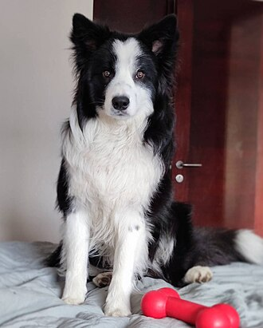
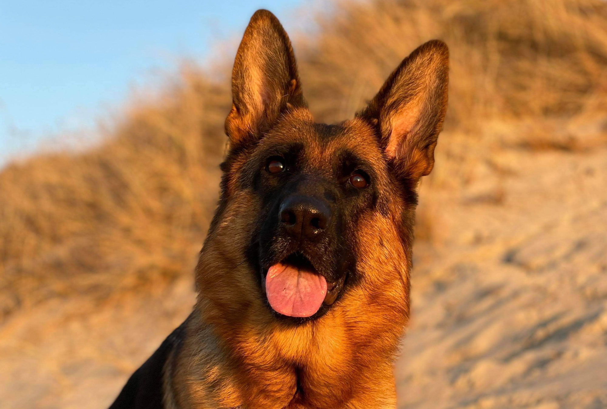

Husky siberiano

- Descripción
- El husky siberiano es una raza de perro de trabajo originaria del norte de Siberia en Rusia. Este perro fue creado por la tribu Chukchi como perro de trabajo para tirar de los trineos a través de largas distancias durante sus partidas de caza, sirviendo así como vehículo de transporte rápido para las presas en la vuelta al poblado
- Caracteristicas
-
- Pelaje denso y resistente al frío
- Ojos llamativos (azules, marrones o heterocromía)
- Alta energía y resistencia
- Independiente y algo terco
- Aullidos característicos en lugar de ladridos
- mamon
Border Collie
- Descripción
- El border collie es una raza de perro de trabajo incluido dentro de la denominación Collie. La raza surgió en la frontera entre Escocia e Inglaterra como perro pastor, sobre todo para trabajar con rebaños de ovejas. El border collie fue seleccionado sobre todo para enfatizar su inteligencia y su obediencia; debido a esto, son uno de los perros pastores más populares en la actualidad.
- Caracteristicas
-
- Inteligencia excepcional y gran capacidad de aprendizaje
- Energía inagotable, necesita mucho ejercicio
- Instinto natural para el pastoreo
- Muy leal y apegado a su dueño
- Necesita estimulación mental constante para evitar aburrimiento
Golden Retriever

- Descripción
- El golden retriever es una raza de perro cobrador que se desarrolló alrededor de 1850 en el Reino Unido, concretamente en Escocia. Con sus características de perro cobrador, sabueso, bloodhound y spaniel de agua, es un hábil perro de caza con aptitudes para el rastreo. Posee una disposición amigable y una actitud que lo ha convertido en una de las razas familiares más populares (mediante registro) en los Estados Unidos, Argentina y en Canadá, el quinto más popular en Australia, y la octava raza más popular en el Reino Unido.
- Caracteristicas
-
- Pelaje dorado y denso
- Temperamento amigable y sociable
- Inteligente y fácil de entrenar
- Buen compañero familiar
- Necesita ejercicio regular para mantenerse saludable
Pastor aleman
- Descripción
- El pastor alemán, también conocido como ovejero alemán, es una raza de perro pastor originaria de Alemania de tamaño mediano a grande. La raza es relativamente nueva, ya que su origen se remonta a 1899. Forman parte del grupo de pastoreo, ya que fueron perros desarrollados originalmente para reunir y vigilar ganado. Desde entonces, sin embargo, gracias a su fuerza, inteligencia, capacidad de entrenamiento y obediencia, los pastores alemanes de todo el mundo son a menudo la raza preferida para muchos otros tipos de trabajo, como son: perro policía, perro militar, perro guardián, guía de ciegos, animal de rescate, y otros, según el uso que le den las fuerzas y cuerpos de seguridad y el ejército.
- Caracteristicas
-
- Cuerpo musculoso y fuerte
- Inteligente y fácil de entrenar
- Leal y protector con su familia
- Necesita ejercicio regular y estimulación mental
- Puede ser reservado con extraños, pero cariñoso con su familia